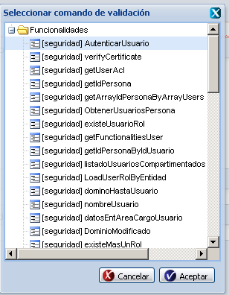
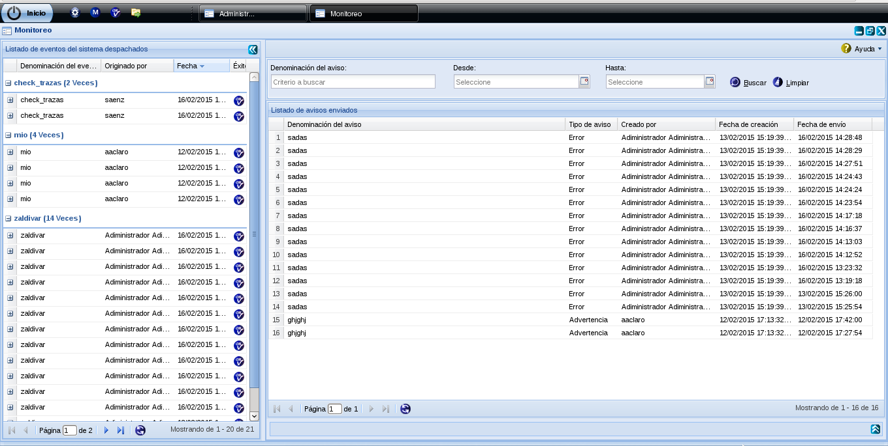

Alertas y Avisos
Versión: 1.0
Fecha de liberación: 28/5/14
Descripción:
Compuesto por:
- Zeolides 2.0
- Ayuda 2.0
- Persona 1.0.3
Desarrollado por:
El Subsistema de Alertas y Avisos permite la configuración de los eventos del sistema y los avisos asociados a estos, y el monitoreo del envío exitoso o no de los avisos previamente configurados. El acceso a dichas funciones se corresponde con las tareas que debe desarrollar cada especialista según su responsabilidad. Siempre que se realice una acción correctamente en las diferentes interfaces (Adicionar, Modificar, Eliminar) el sistema mostrará un mensaje informativo indicado que se ejecutó la acción satisfactoriamente, igualmente cuando se seleccione un elemento para eliminar, se mostrará un mensaje de confirmación de la acción. Las opciones de las interfaces del subsistema cuentan con una ayuda en línea, la cual indica la acción a realizar y la combinación de teclas a usar para acceder directamente por el teclado de la computadora. Esto se puede visualizar pasando el ratón por encima de estas.
Configurar avisos
El subsistema permite la configuración de los eventos del sistema y los avisos asociados a estos, y el monitoreo del envío exitoso o no de los avisos previamente configurados.
¿Cómo acceder al componente?
En el menú de opciones del sistema que se despliega al presionar el botón Inicio, se debe seleccionar el subsistema Herramientas. De este modo se muestran los módulos correspondientes al mismo. Entre los componentes se observará Notificaciones y al seleccionarlo se muestra la opción Configurar avisos.
La interfaz Configurar avisos se divide en dos áreas fundamentales:
El área superior correspondiente a los eventos del sistema, permite gestionar la configuración de los eventos que desea realizar. Ver Figura 1.
Por su parte el área inferior gestiona los avisos asociados a cada uno de los eventos. Ver Figura 1.

Figura 1. Configurar avisos
Descripción del área Eventos del sistema
Muestra en la barra superior, el nombre correspondiente al área que se encuentra utilizando, además de las opciones presentes en la parte superior derecha de todas las interfaces, las cuales permiten minimizar, maximizar, restaurar o salir seleccionando la opción correspondiente. Ver Figura 1.
Para adicionar un evento del sistema, se puede acceder a esta funcionalidad con las teclas (Alt + I). Posteriormente se abre una ventana flotante brindando las opciones que se muestran en la siguiente figura.

1.Introducir el nombre del evento. Este dato es obligatorio para realizar la acción de adicionar, en caso de que se deje vacío y se seleccione la opción Aceptar, se mostrará un mensaje de error en el campo en color rojo indicando la presencia del mismo.
2.Introducir la descripción del evento del sistema, este dato no es obligatorio.
3.Seleccionar si el evento del sistema se encuentra asociado a una acción de un controlador de algún componente existente.
4.Seleccionar el momento de ejecución del evento asociado a la acción. Este campo es obligatorio, en caso de que se deje vacío y se seleccione la opción Aceptar, se mostrará un mensaje de error en el campo en color rojo indicando la presencia del mismo.
5.Navegar hasta encontrar la funcionalidad de acción, luego se selecciona y acepta la funcionalidad de acción deseada. Ver figura 3.
6.Cancelar las acciones y salir de la interfaz sin guardar los datos.
7.Adicionar los datos introducidos y limpiar los campos.
8.Adicionar los datos introducidos y cerrar la ventana.
Nota: Si se introduce un elemento que ya existe, el sistema mostrará un mensaje de error.

Figura 3. Seleccionar funcionalidad de acción.
Modificar evento del sistema
La interfaz muestra un listado que comprende la relación de los eventos existentes. Luego de seleccionar el evento a modificar, se puede acceder a esta funcionalidad con las teclas (Alt + M) o presionando el botón de la acción correspondiente. Posteriormente se abre una ventana flotante brindando las opciones que se muestran en la Figura 4. Si al modificar el evento, se introduce uno existente, el sistema mostrará un mensaje de error.

Las diferentes opciones de la interfaz son las siguientes:
1.Modificar el nombre del evento. Este dato es obligatorio para realizar la acción de modificar, en caso de que se deje vacío y se seleccione la opción Aceptar, se mostrará un mensaje de error en el campo en color rojo indicando la presencia del mismo.
2.Modificar la descripción del evento del sistema, este dato no es obligatorio.
3.Seleccionar si el evento del sistema se encuentra asociado a una acción de un controlador de algún componente existente.
4.Modificar el momento de ejecución del evento asociado a la acción. Este campo es obligatorio, en caso de que se deje vacío y se seleccione la opción Aceptar, se mostrará un mensaje de error en el campo en color rojo indicando la presencia del mismo.
5.Navegar hasta encontrar la funcionalidad de acción, luego se selecciona y acepta la funcionalidad de acción deseada. Ver Figura 4.
7.Adicionar los datos introducidos y limpiar los campos.
8.Adicionar los datos introducidos y cerrar la ventana.
Nota: Si modifica un evento del sistema introduciendo el mismo valor de otro evento del sistema existente, el sistema mostrará un mensaje de error.
Eliminar un evento
Para eliminar un evento del sistema previamente seleccionado en el listado, el sistema siempre mostrará un mensaje de confirmación de la acción. Se puede realizar esta operación seleccionando el elemento en el listado y oprimiendo la tecla Delete. Si se selecciona un elemento a eliminar que está siendo usado por otra funcionalidad, el sistema mostrará un mensaje de confirmación. Ver Figura 5.

Figura 5. Mensaje de confirmación para eliminar un evento del sistema.
Desactivar o activar un evento
Para activar o desactivar un evento del sistema, se habilitará la opción Desactivar luego de seleccionar el evento del listado que muestra el sistema. Se puede realizar esta operación combinando las teclas (Alt + A) o presionando el botón de la acción correspondiente, posteriormente se muestra un mensaje de confirmación informando el éxito de la acción.

Figura 6. Opción para activar un evento.
Ayuda de la funcionalidad
Muestra la ayuda detallada de la funcionalidad. Se puede acceder a esta funcionalidad seleccionando la combinación de teclas ( Alt + H).
Mostrar listado de eventos
Muestra el listado de los eventos del sistema organizado en tres columnas que representan la Denominación del evento, - que incluye el nombre asociado al evento así como la descripción correspondiente-, la Referencia de la acción asociada al evento del sistema, y la evidencia de encontrarse activo o no, esta última se representa a través de una bandera. Si la bandera es de color rojo indica que el evento del sistema se encuentra inactivo, si es de color verde indica que el evento del sistema se encuentra activo.
Descripción del área Avisos
El área Avisos se ubica en la parte inferior de la interfaz Configurar avisos. Ver Figura 7.
Figura 7. Área avisos.
Adicionar un aviso del sistema
Para adicionar un aviso, el sistema muestra una ventana compuesta por tres pestañas: Configuración básica, Vías de envío y Destinatarios. Dichas pestañas contienen campos obligatorios, ello indica que deben ser introducidos todos los datos que requiere la ventana. En caso de que se deje vacío alguno de estos campos obligatorios, el sistema mostrará un mensaje de error en el campo en color rojo indicando la presencia del mismo. Se puede acceder a esta funcionalidad a través de la combinación de teclas (Alt + I). Ver Figura 8.
Nota: Las acciones Aplicar y Aceptar se realizan luego de haber llenado los campos obligatorios.

Figura 8. Registrar aviso. Configuración básica.
Configuración básica
Las diferentes opciones de la interfaz de laFigura 8 permiten:
1.Introducir el nombre del aviso. Este campo es obligatorio, en caso de que se deje vacío y se seleccione la opción Aceptar, se mostrará un mensaje de error en el campo en color rojo indicando la presencia del mismo.
2.Introducir la descripción del aviso. Este campo no es obligatorio.
3.Especificar el tipo de aviso. Este campo es obligatorio, en caso de que se deje vacío y se seleccione la opción Aceptar, se mostrará un mensaje de error en el campo en color rojo indicando la presencia del mismo.
4.Navegar por los subsistemas para seleccionar la funcionalidad que validará el envío del aviso. Si el evento al que se le quiere añadir el aviso está asociado a una acción determinada solo se le mostrarán las funcionalidades que pertenecen al subsistema que contiene dicha acción. Ver Figura 9.
Si el evento al que se le quiere añadir el aviso está asociado a una acción determinada solo se le mostrarán las funcionalidades que pertenecen al subsistema que contiene dicha acción.

Figura 9. Comando de validación del aviso.
1.Si se encuentra seleccionado indica que la que el aviso se encuentra activo y puede ser utilizado, sino permanecerá inactivo hasta que se requiera de su empleo.
2. Cancelar las acciones y salir de la interfaz sin guardar los datos.
3.Adicionar los datos introducidos y limpiar los campos.
4.Adicionar los datos introducidos y cerrar la ventana.
Vías de envío
Muestra tres pestañas: Correo electrónico, Jabber y SMS. Ver Figura 10.

Figura 10. Registrar aviso. Vías de aviso.
Las diferentes opciones de la interfaz permiten:
1.Activar al menos una vía de envío que desee utilizar, dentro de las cuatro pestañas que muestra la interfaz.
2.Se especifica el contenido del mensaje, que es obligatorio, una vez activa la vía de envío, en caso de que se deje vacío este campo y se seleccione la opción Aceptar, se mostrará un mensaje de error en el campo en color rojo indicando la presencia del mismo.
3. Cancelar las acciones y salir de la interfaz sin guardar los datos.
4.Adicionar los datos introducidos y limpiar los campos.
5.Adicionar los datos introducidos y cerrar la ventana.
Destinatario
Contiene dos pestañas Usuarios y Gestionar listas de distribución. El aviso debe contener al menos un destinatario. Ver Figura 11.

Figura 11. Registrar aviso. Destinatarios. Usuarios.
Usuario
Las diferentes opciones de la interfaz correspondiente a Gestionar usuarios permiten:
1.Adicionar destinatarios a la lista. Se puede acceder a esta funcionalidad seleccionando la combinación de teclas (Alt + I). Una vez seleccionada esta acción se muestra la ventana que permite seleccionar al/los destinatario(os) utilizando la interfaz de persona. Debe existir al menos un usuario Ver Figura 12.

Figura 12. Gestionar persona. Adicionar destinatario.
Las opciones de la figura anterior permiten:
1.Introducir el número de identificación, nombre, segundo nombre, primer o segundo apellido del usuario que se quiere buscar, se debe insertar al menos 3 caracteres.
2.Buscar el(los) usuario(s) que cumpla(n) con el criterio introducido en la opción anterior. Se puede realizar esta operación seleccionando la combinación de teclas (Alt + B).
3.Buscar usuario por sus datos básicos. Se puede realizar esta operación seleccionando la combinación de teclas (Alt + T). Ver Figura 13.

Figura 13. Gestionar persona. Buscar por datos básicos.
Las opciones de la figura anterior permiten:
1.Insertar el nombre de la persona que se quiere buscar.
2.Introducir el primer apellido de la persona.
3.Insertar el segundo apellido de la persona.
4.Introducir el segundo nombre de la persona.
5.Seleccionar el tipo de identificación.
6.Introducir el número de identificación.
7.Escoger el sexo de la persona.
8.Seleccionar lacategoría.
9.Seleccionar la categoría asociada a la persona.
10.Cancelar las acciones y salir de la interfaz sin guardar los datos
11.Limpiar los campos permitiendo introducir datos para realizar otra búsqueda
12.Cerrar y realizar la búsqueda.
Gestionar listas de distribución
Esta pestaña está compuesta por dos paneles: Listas de distribución y Usuarios. Ver Figura 14.

Figura 14. Registrar aviso. Destinatario. Gestionar listas de distribución.
Las diferentes opciones de la interfaz permiten:
1. Adicionar lista de distribución. Al seleccionar la opción correspondiente se despliega una ventana que permitirá adicionar la denominación que identificará a dicha lista. Además se puede acceder a esta opción a través de la combinación de teclas (Alt + I). Ver Figura 15. El tamaño mínimo requerido es de 3 caracteres, en caso de introducir menos de esta cantidad de caracteres se mostrará un mensaje de error en el campo.

Figura 15. Adicionar lista de distribución.
Una vez creada la nueva lista de distribución se procede a adicionar los contactos correspondientes (ejecutar opción 11). Ver Figura 14.
2. Modificar lista de distribución. Se puede acceder a esta funcionalidad a través de la combinación de teclas (Alt + M). Luego de seleccionar la lista de distribución que será modificada y la opción modificar, se despliega una ventana que permitirá modificar la denominación de la lista de distribución seleccionada. Ver Figura 16.

Figura 16. Modificar lista de distribución.
3.Eliminar lista de distribución. Si desea eliminar una lista de distribución determinada, esta opción le permitirá hacerlo, además puede utilizar la tecla Delete. Una vez seleccionada esta opción el sistema mostrará una ventana de confirmación de la acción. Ver Figura 17.

Figura 17. Eliminar lista de distribución.
4.Listar las listas de distribución existentes. Al seleccionar una lista de distribución se muestra en el panel derecho (opción 13) el(los) usuario(s) que conforma(n) la lista de distribución.
5.Ir a la primera página.
6.Mostrar los datos de la página anterior.
7. Mostrar el número de la página donde se encuentra, puede introducir el número en caso de que se conozca donde está ubicada la persona.
8. Ir a la página siguiente.
9.Ir a la última página.
10.Actualizar el listado de personas.
11.Adicionar usuarios a una lista de distribución seleccionada. Se puede acceder a esta opción a través de la combinación de teclas (Alt + I). Una vez seleccionada esta opción se despliega una ventana que permitirá buscar el(los) usuario(s) que desea añadir a la lista de distribución.
12.Eliminar el(los) usuario(s) seleccionado. Se puede acceder a esta opción presionando la tecla Delete o seleccionando el botón correspondiente a la acción. Una vez seleccionada esta opción el sistema mostrará una ventana de confirmación de la acción. Ver Figura 18.

Figura 18. Eliminar usuario de la lista de distribución.
13. Listar los usuarios existentes.
14. Ir a la primera página.
15. Mostrar los datos de la página anterior.
16. Mostrar el número de la página donde se encuentra, puede introducir el número en caso de que se conozca donde está ubicada la persona.
17. Ir a la página siguiente.
18. Ir a la última página.
19. Actualizar el listado de personas.
20. Cerrar la interfaz sin guardar los datos.
21. Guardar los datos sin cerrar la interfaz permitiendo realizar otras opciones.
22. Adicionar el(los) usuario(s) y cerrar la interfaz.
Nota: Las opciones (5), (6), (8), (9), (14), (15), (17), (18) se habilitarán cuando exista más de una página con datos en la interfaz.
Modificar aviso
Luego de seleccionar el aviso que será modificado, se procede a la modificación del mismo a través de la combinación de teclas (Alt + M) o utilizando el botón correspondiente. El sistema muestra una ventana que permitirá realizar la modificación en los campos que así lo requieran. Ver Figura 19.

Figura 19. Modificar aviso.
Se procede de la misma forma en la que realiza la funcionalidad Adicionar aviso, ver epígrafe Adicionar un aviso del sistema, con la diferencia de que el botón aplicar se exime de estas funcionalidades.
Eliminar aviso
Luego de seleccionar el aviso que será eliminado, se procede a la eliminación del mismo a través de la tecla Delete. El sistema mostrará una ventana de confirmación de la acción. Ver figura 20.

Figura 20. Eliminar aviso
Las diferentes opciones de la interfaz Configurar avisos permiten además:
1.Mostrar el listado de los avisos del sistema organizado en tres columnas que representan la Denominación del evento, que incluye el nombre asociado al evento así como la descripción correspondiente, el Tipo de aviso, y la evidencia de encontrarse activo o no, esta última se representa a través de una bandera. Si la bandera es de color rojo indica que el evento del sistema se encuentra inactivo, si es de color verde indica que el evento del sistema se encuentra activo.
2.Ir a la primera página.
3.Ir a la página anterior.
4.Mostrar el número de la página donde se encuentra, puede introducir el número en caso de que se conozca donde está ubicado el evento.
5.Ir a la página siguiente.
6.Ir a la última página.
7.Actualizar el listado de los eventos del sistema existentes.
8.Muestra la cantidad de resultados encontrados.
Monitoreo
La interfaz correspondiente al monitoreo permite consultar los eventos que se han ejecutado, los avisos que se han enviado, así como los detalles del éxito o fracaso de estos. La interfaz se compone de dos áreas fundamentales: Eventos despachados y avisos enviados. Ver Figura 21.

Figura 21. Monitoreo.
Eventos despachados
Muestra la relación de los eventos que han sido ejecutados históricamente. La información se muestra a través de cuatro columnas organizadas por el Nombre del evento, el origen, la fecha y el éxito del mismo. Ver Figura 22.

Figura 22. Eventos despachados.
Las diferentes opciones de la interfaz permiten:
1.Mostrar la relación de los eventos que han sido ejecutados históricamente organizados por nombre del evento, nombre de la persona que lo generó, fecha en que fue ejecutado y el éxito del mismo. El resultado del éxito se muestra a través de dos botones, si se encuentra de color azul, significa que el evento tuvo éxito, en caso contrario se muestra de color rojo.
2.Ir a la primera página.
3.Ir a la página anterior.
4.Mostrar el número de la página donde se encuentra, puede introducir el número en caso de que se conozca donde está ubicado el evento.
5.Ir a la página siguiente.
6.Ir a la última página.
7.Actualizar el listado de los eventos del sistema existentes.
8.Muestra la cantidad de resultados encontrados.
Nota: Las opciones (2), (3), (5), (6), se habilitarán cuando exista más de una página con datos en la interfaz. Ver Figura 43.
Avisos enviados
Mostrara la relación de los avisos que han sido enviados. Ver Figura 23.

Figura 23. Avisos enviados.
Las diferentes opciones de la interfaz permiten:
1.Introducir la fecha de envío del aviso que desea monitorizar.
2.Buscar el(los) aviso(s) enviado(s) que desea monitorizar. Esta opción se puede realizar a través de la combinación de teclas (Alt + B).
3.Limpiar los criterios de búsqueda introducidos.
4.Mostrar la ayuda detallada de la interfaz. Se puede acceder a esta funcionalidad seleccionando la combinación de teclas (Alt + H).
5.Mostrar una lista organizada de los avisos enviados.
6.Ir a la primera página.
7.Ir a la página anterior.
8.Mostrar el número de la página donde se encuentra, puede introducir el número en caso de que se conozca donde está ubicado el evento.
9.Ir a la página siguiente.
10.Ir a la última página.
11.Actualizar el listado de los eventos del sistema existentes.
12.Muestra la cantidad de resultados encontrados.
Nota: Las opciones (6), (7), (9), (10), se habilitarán cuando exista más de una página con datos en la interfaz.
Detalles del aviso
Muestra la relación los detalles del los avisos que han sido enviados. Esta área se encuentra dividida en dos áreas fundamentales: Mensajes y Destinatarios. Ver Figura 24.

Figura 24. Detalles del aviso.
Las diferentes opciones de la interfaz permiten:
1.El área correspondiente a los mensajes muestra un listado de con datos correspondientes a los mensajes enviados.
2.El área correspondiente a los destinatarios contiene una lista con detalles sobre los mismos, así como la muestra del éxito del envío del aviso. El resultado del éxito se muestra a través de dos botones, si se encuentra de color azul, significa que el evento tuvo éxito, en caso contrario se muestra de color rojo.
3.Ir a la primera página.
4.Ir a la página anterior.
5.Mostrar el número de la página donde se encuentra, puede introducir el número en caso de que se conozca donde está ubicado el evento.
6.Ir a la página siguiente.
7.Ir a la última página.
8.Actualizar el listado de los eventos del sistema existentes.
9.Muestra la cantidad de resultados encontrados.
Nota: Las opciones (3), (4), (6), (7), se habilitarán cuando exista más de una página con datos en la interfaz.
Videos tutoriales
Video 1: Insertar evento
Video 2: Insertar aviso
Video 3: Modificar aviso
Video 4: Monitorizar avisos